8. Vkladanie monitorovacích údajov do ISPO
Pre používanie funkcionality Vkladanie údajov, ktorá umožňuje pridávať a editovať monitorovacie údaje do ISPO, potrebujeme mať priradenú pracovnú pozíciu Monitorovací manažér VIR. Na základe tohto oprávnenia môžeme editovať a evidovať monitorovacie údaje výzvy, priameho vyzvania, ŽoPPM, projektu a ŽoP v časti Vkladanie údajov.
Táto funkcionalita nahrádza zber monitorovacích údajov cez Prílohu SIPOO č. 5.1 - 2 Vzor monitorovacích údajov. Funkcionalita slúži predovšetkým na vkladanie monitorovacích údajov, ktoré nebolo možné zbierať automaticky prostredníctvom funkcionalít ISPO. Napríklad výzvy vyhlásené mimo ISPO, priame vyzvania vyhlásené mimo ISPO, ŽoPPM predložené mimo ISPO, projekty predložené mimo ISPO, ŽoP predložené mimo ISPO.
Po pridaní pracovnej pozície Monitorovací manažér VIR sa v pracovnom paneli objaví záložka Vkladanie údajov. Kliknutím na šípku sa objaví zoznam so záložkami:
-
Výzvy -> Obsahuje priame vyzvania aj štandardné výzvy
-
ŽoPPM -> Žiadosti o poskytnutie prostriedkov mechanizmu
-
ŽoP -> Žiadosti o platbu
-
Projekty -> Projekty a prijímatelia
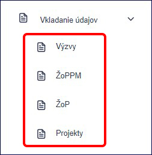
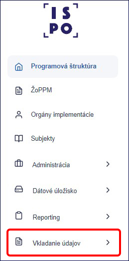
8.1) Pridanie výzvy / priameho vyzvania
V menu Vkladanie údajov rozklikneme záložku Výzvy. Zobrazí sa zoznam výziev a priamych vyzvaní, ktoré už systém eviduje.
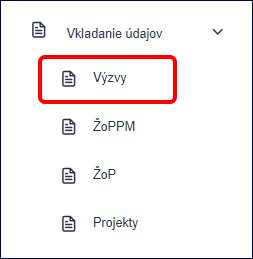
V zozname sa orientujeme cez Kód výzvy a Názov výzvy. To, či ide o výzvu alebo priame vyzvanie, vidíme v stĺpci Typ. To, v akom stave je výzva či priame vyzvanie, vidíme v stĺpci Stav. To, akým spôsobom sa údaje dostali do ISPO, indikuje stĺpec Mód spracovania. Pre lepšiu orientáciu v zozname nám pomáha Filter.
Mód spracovania nám hovorí o tom, akým spôsobom sa výzvy, priame vyzvania ako aj ďalšie údaje dostali do ISPO. Poznáme 3 spôsoby:
-
Výzvu sme vyhlásili cez ISPO (mód spracovania ISPO)
-
Výzva / Priame vyzvanie nahralo Centrum podpory ISPO importom z excelu podľa Prílohy SIPOO č. 5.1 - 2 Vzor monitorovacích údajov, ktoré sme nahrali na Úložisko NIKA (mód spracovania Import)
-
Výzvu / Priame vyzvanie sme pridali cez funkcionalitu Vkladanie údajov (mód spracovania Import)
Výzvy a priame vyzvania s módom spracovania ISPO nie je možné editovať cez funkcionalitu Vkladanie údajov, pretože ich editujeme priamo v záložke Výzvy podľa kapitoly 3) a 5).
8.1.1) Pre pridanie výzvy klikneme na tlačidlo Vytvoriť výzvu.
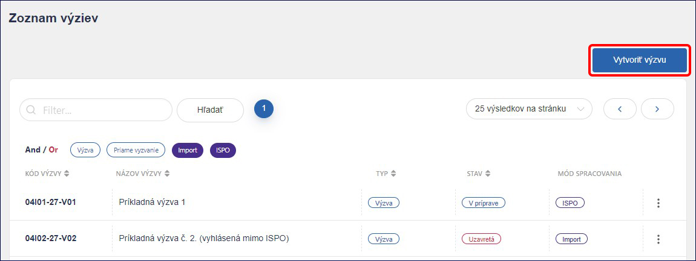
Typ výzvy vyberieme Štandardná výzva. Do poľa Link vložíme odkaz na webové znenie vyhlásenej výzvy. Zo zoznamu vyberieme Komponent, Opatrenie a Vykonávateľa. Kód výzvy sa na základe uvedených údajov vygeneruje automaticky, ale v prípade, že nie je správny, môžeme ho zmeniť. Ďalej uvedieme Názov výzvy.
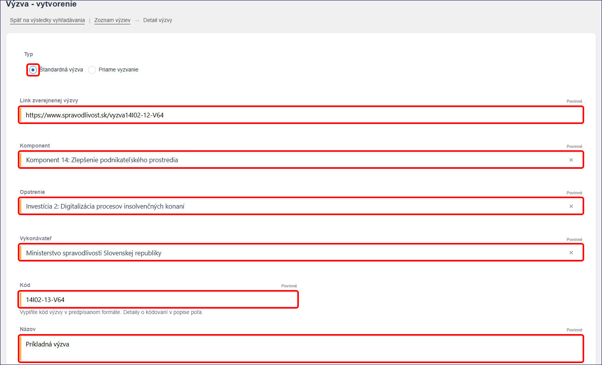
V nasledujúcej časti zo zoznamu vyberieme Stav výzvy, uvedieme Dátum vyhlásenia, Predpokladaný dátum uzavretia, Skutočný dátum uzavretia (ak je známy), Výšku finančných prostriedkov a Zostatok finančných prostriedkov (ak sú známe). Ku Schéme štátnej pomoci / pomoci de minimis a k Zjednodušenému vykazovaniu prostriedkov sa môžeme vyjadriť (áno, nie, netýka sa). Môžeme uviesť Dátum schválenia záväzného stanoviska NIKA a Poznámku. Keď máme všetko potrebné vyplnené, klikneme na tlačidlo Pridať.
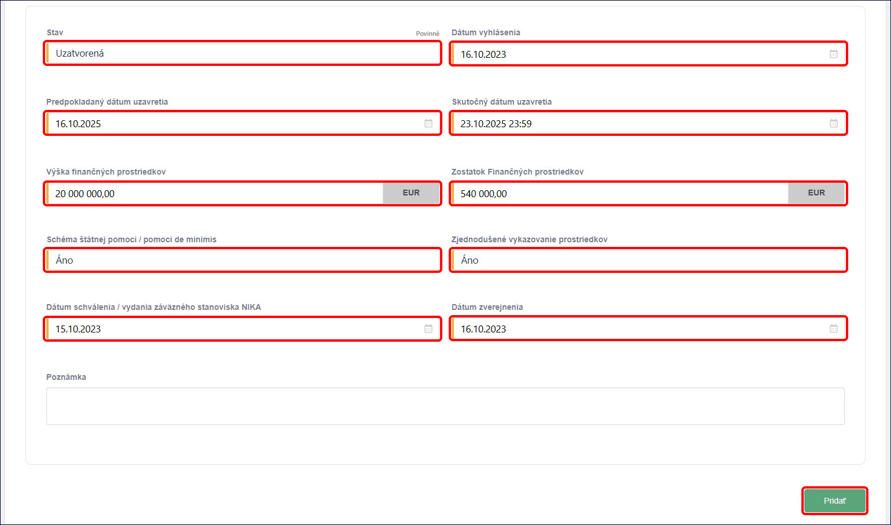
Takto založená výzva sa dostane do zoznamu Vkladanie údajov - Výzvy a kedykoľvek sa k nej môžeme vrátiť a upraviť.
8.1.2) Pre pridanie priameho vyzvania klikneme na tlačidlo Vytvoriť výzvu.
Typ vyberieme Priame vyzvanie. Do poľa Link vložíme odkaz na webové znenie priameho vyzvania. Zo zoznamu vyberieme Komponent, Opatrenie a Vykonávateľa. Kód sa na základe uvedených údajov vygeneruje automaticky, ale v prípade, že nie je správny, môžeme ho zmeniť. Ďalej uvedieme Názov priameho vyzvania.
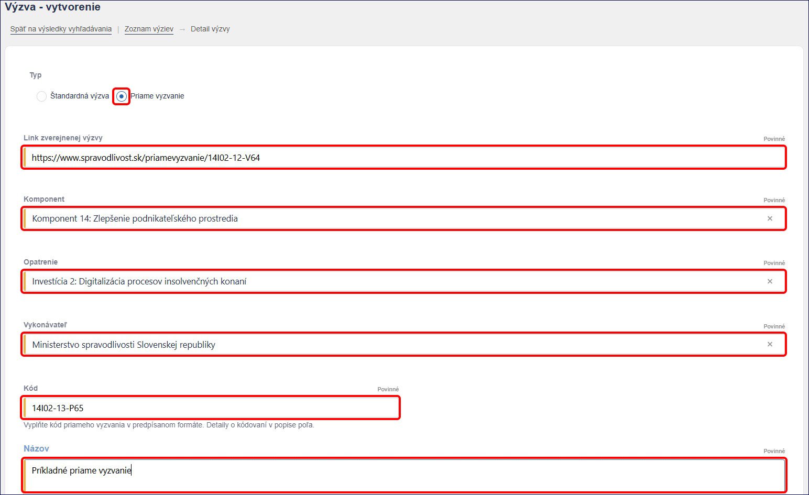
Zo zoznamu vyberieme Stav priameho vyzvania. V časti Prijímateľ klikneme na tlačidlo Pridať. Označíme organizáciu a do poľa Výber organizácie uvedieme názov alebo IČO organizácie. Systém ISPO spárovaný s RPO navrhne zoznam organizácií, z ktorých si vyberieme požadovanú a potvrdíme kliknutím na tlačidlo Pridať.
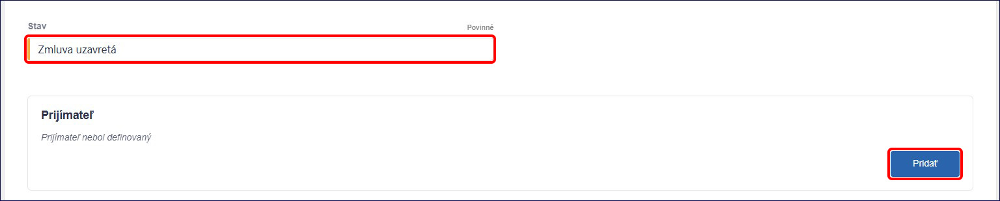
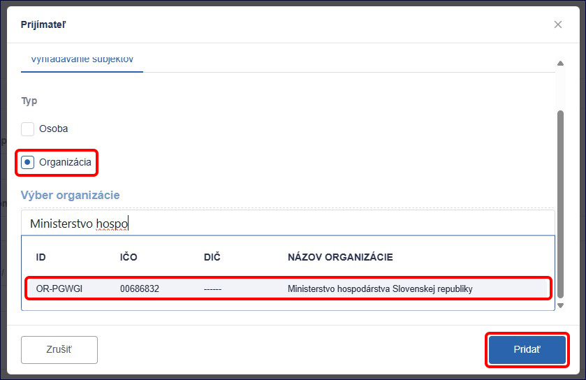
Následne môžeme vyplniť polia ako Výška finančných prostriedkov, Schéma štátnej pomoci/pomoci de minimis, Zjednodušené vykazovanie prostriedkov a Dátum schválenia / vydania záväzného stanoviska NIKA. Keď máme všetko potrebné vyplnené, klikneme na tlačidlo Pridať.
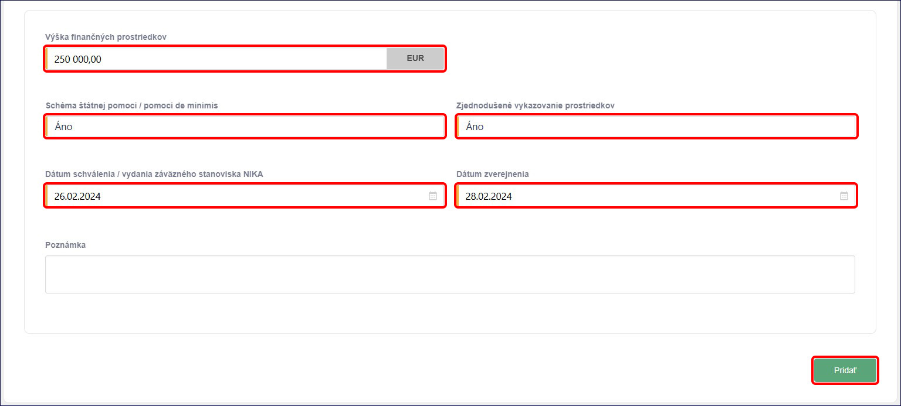
Takto založené priame vyzvanie sa dostane do zoznamu Vkladanie údajov - Výzvy a kedykoľvek sa k nemu môžeme vrátiť a upraviť.
8.2) Pridanie ŽoPPM
Pre pridanie ŽoPPM v menu Vkladanie údajov rozklikneme záložku ŽoPPM. Zobrazí sa zoznam ŽoPPM, ktoré systém eviduje.
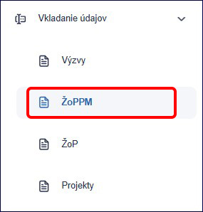
V zozname sa orientujeme pomocou stĺpcov Kód žiadosti*, Kód výzvy, Názov / meno žiadateľa, Dátum predloženia žiadosti, Požadovaná suma a Mód Spracovania Pre lepšiu orientáciu v zozname nám pomáha Filter. Pre pridanie ŽoPPM klikneme na tlačidlo *Vytvoriť žiadosť.
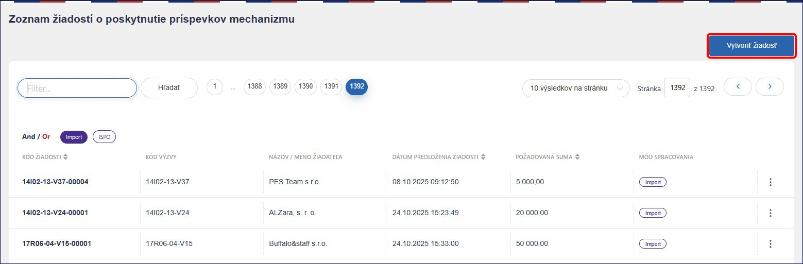
Ak zo zoznamu v poli Kód výzvy vyberieme výzvu, Kód ŽoPPM nám systém automaticky vygeneruje. Ak systém kód žiadosti nevygeneruje alebo nie je správny, môžeme ho upraviť. Následne vyberieme Stav žiadosti a uvedieme Požadovanú sumu a Dátum predloženia žiadosti. V časti žiadateľ klikneme na tlačidlo Pridať.
Upozornenie! Nie je možné pridať ŽoPPM, ak v systéme nie je evidovaná výzva. Ak v zozname nenájdeme kód výzvy, ktorý hľadáme, výzva nie je v systéme evidovaná.
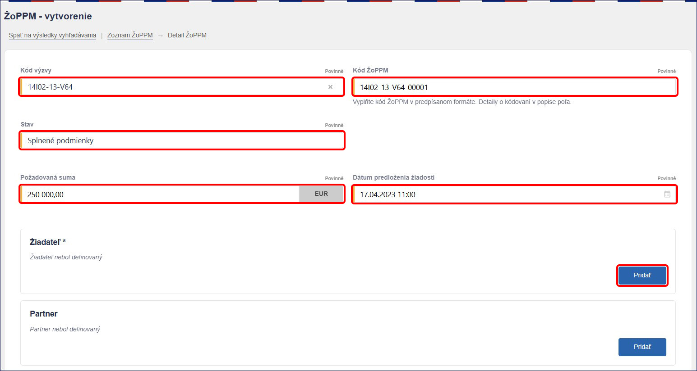
Po kliknutí na tlačidlo Pridať vyberieme typ osobu/organizáciu do poľa Výber osoby / Výber organizácie uvedieme meno a priezvisko/názov alebo IČO organizácie. Systém ISPO spárovaný s RFO/ RPO navrhne zoznam osôb/organizácií, z ktorých si vyberieme požadovanú a potvrdíme tlačidlom Pridať.

Takto pridaný žiadateľ sa zobrazí v základnom tvare, systém však na pozadí dotiahne všetky údaje o osobe /organizácii. Rovnakým spôsobom môžeme pridať aj partnera.
Ďalej môžeme vyplniť polia ako Právny predpis, Výsledok (splnené/nesplnené podmienky), Námet zmluvy zaslaný žiadateľovi (áno, nie, netýka sa), Poradie, Poznámku a môžeme nahrať Prílohy. Keď máme všetko potrebné vyplnené, klikneme na zelené tlačidlo Pridať.
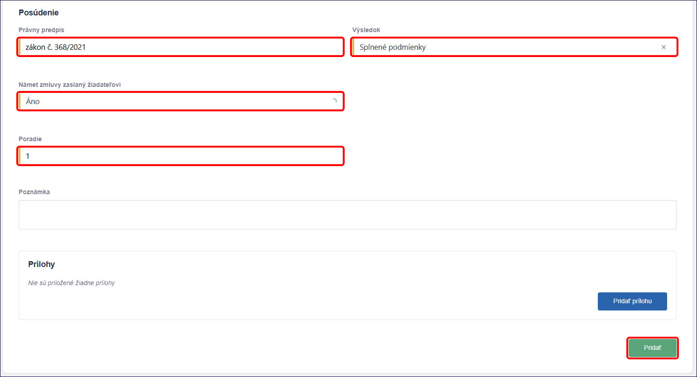
Takto založená ŽoPPM sa dostane do zoznamu Vkladanie údajov – ŽoPPM a kedykoľvek sa k nej môžeme vrátiť a upraviť.
8.3) Pridanie Projektu
Pre pridanie projektu v menu Vkladanie údajov rozklikneme záložku Projekty. Zobrazí sa zoznam projektov, ktoré systém eviduje.
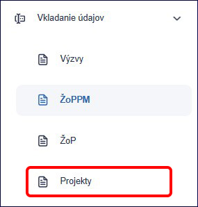
V zozname sa orientujeme pomocou stĺpcov Kód projektu, Názov, Celková suma a Mód Spracovania. Pre lepšiu orientáciu v zozname nám pomáha Filter. Pre pridanie Projektu klikneme na tlačidlo Vytvoriť projekt.
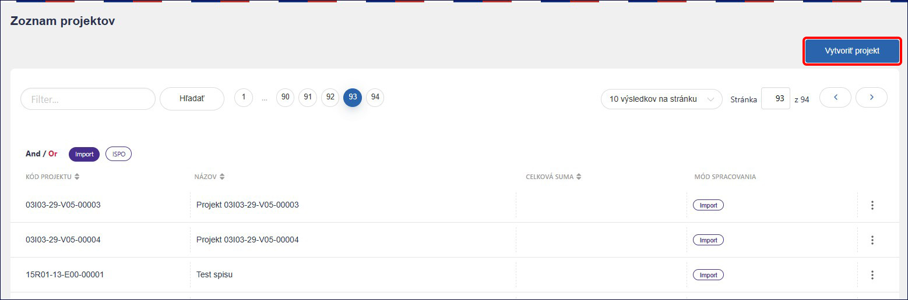
V nasledovných poliach najskôr vyberieme jednu z možností, v závislosti od toho o aký typ projektu ide:
-
Kód ŽoPPM
-
Kód priameho vyzvania
-
Opatrenie
V prípade, že vytvárame projekt na priame vyzvanie, vyberieme Kód priameho vyzvania zo zoznamu, ale NEvyplníme Kód ŽoPPM ani Opatrenie.
V prípade, že vytvárame projekt na ŽoPPM, vyberieme Kód ŽoPPM zo zoznamu, ale NEvyplníme Kód priameho vyzvania ani Opatrenie..
Upozornenie! Nie je možné zaevidovať Projekt, ak v systéme nie je evidovaná ŽoPPM alebo priame vyzvanie, na ktoré chceme projekt pridať.
V prípade, že vytvárame evidenčný projekt, vyberieme Opatrenie zo zoznamu, ale NEvyplníme Kód priameho vyzvania ani Kód ŽoPPM.
Kód projektu systém automaticky vygeneruje po zvolení jednej z vyššie uvedených možností. Ak kód projektu systém nevygeneruje alebo nie je podľa nás správny, môžeme ho upraviť. Následne vyberieme Stav a uvedieme Názov projektu.
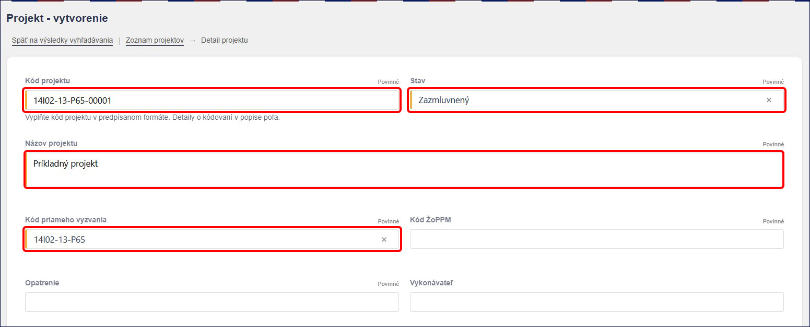
V časti Výdavky môžeme vyplniť polia pre sumy ako Suma z Plánu obnovy bez DPH, Čiastka DPH z Plánu obnovy, Suma vlastných zdrojov žiadateľa, Suma verejných zdrojov okrem zdrojov EÚ a Suma verejných zdrojov EÚ. Následne klikneme na tlačidlo Prepočítať a pole Celková suma projektu sa prepočíta automaticky.

V časti Zmluva môžeme vyplniť polia ako Číslo zmluvy, Dátum platnosti zmluvy, Dátum uzavretia zmluvy, Dátum zverejnenia zmluvy v CRZ a Link CRZ.
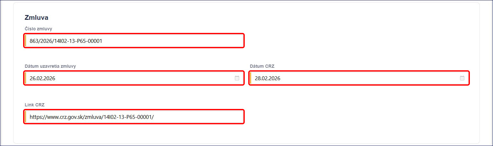
Upozornenie! Pokiaľ sme nastavili stav projektu Zazmluvnený, údaje o zmluve musíme uviesť tiež.
V časti prijímateľ klikneme na tlačidlo Pridať. Systém nám automaticky navrhne subjekt, ktorý už bol v ŽoPPM alebo v Priamom vyzvaní pridaný.

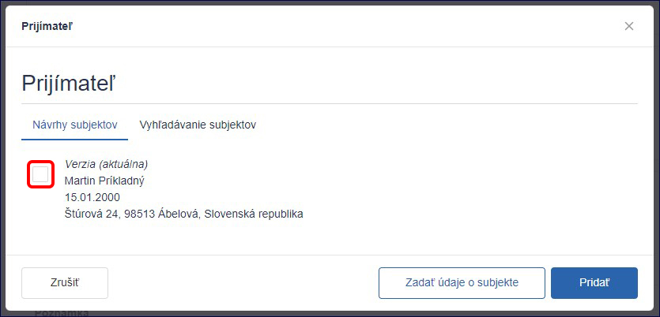
Ak nám navrhnutý subjekt nevyhovuje, alebo vytvárame evidenčný projekt po kliknutí na tlačidlo pridať osobu/organizáciu a do poľa Výber osoby / Výber organizácie uvedieme meno a priezvisko/názov alebo IČO organizácie. Systém ISPO spárovaný s RFO/ RPO navrhne zoznam osôb/organizácií, z ktorých si vyberieme požadovanú a potvrdíme tlačidlom Pridať.
Takto pridaný prijímateľ sa zobrazí v základnom tvare, systém však na pozadí dotiahne všetky údaje o prijímateľovi.
Rovnakým spôsobom môžeme pridať aj partnera.
V časti Poznámka môžeme uviesť doplňujúce údaje k projektu. Následne klikneme na tlačidlo Pridať, čím potvrdíme vytvorenie projektu.

Takto založený projekt sa dostane do zoznamu Vkladanie údajov - Projekty a kedykoľvek sa k nemu môžeme vrátiť a upraviť.
8.4) Pridanie ŽoP
Pre pridanie žop v menu Vkladanie údajov rozklikneme záložku ŽoP. Zobrazí sa zoznam ŽoP, ktoré systém eviduje.
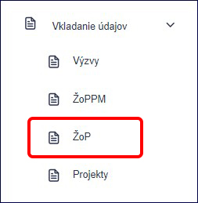
V zozname sa orientujeme pomocou stĺpcov Kód žiadosti, Typ, Dátum predloženia žiadosti, Dátum vyplatenia, Požadovaná suma a Mód Spracovania. Pre lepšiu orientáciu v zozname nám pomáha Filter. Pre pridanie ŽoP klikneme na tlačidlo Vytvoriť žiadosť.
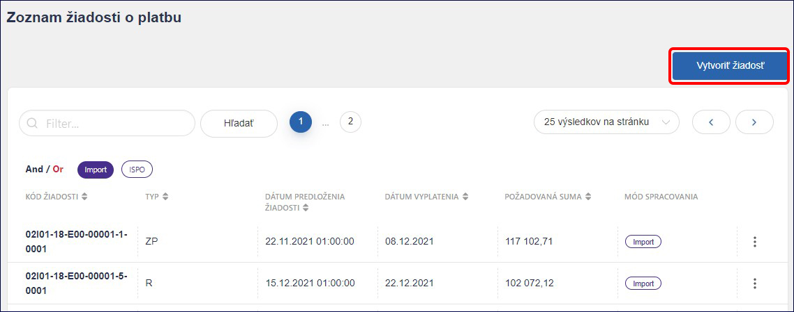
Najskôr zo zoznamu vyberieme Kód projektu. Následne vyberieme Typ žiadosti o platbu. Systém automaticky vygeneruje Kód ŽoP na základe kódu projektu a typu žiadosti. Ak kód ŽoP systém nevygeneruje alebo nie je podľa nás správny, vieme ho upraviť.
Upozornenie! Nie je možné pridať ŽoP, ak v systéme nie je evidovaný Projekt, na ktorý chceme žiadosť o platbu zaevidovať.
Každý typ ŽoP má svoje číselné označenie. Pre kontrolu ich uvádzame a to nasledovne:
-
0 – Vrátenie (V)
-
1 – Poskytnutie zálohy (PZ)
-
2 – Zúčtovanie zálohy (ZZ)
-
3 – Poskytnutie predfinancovania (PP)
-
4 – Zúčtovanie predfinancovania (ZP)
-
5 – Priebežná platba / Refundácia (PRP)
Ďalej uvedieme Dátum predloženia žiadosti, môžeme uviesť Dátum vyplatenia žiadosti. V prípade, že evidujeme zúčtovaciu ŽoP, uvedieme aj Relevanciu k ŽoP (kód ŽoP, ktorú ideme zúčtovať).
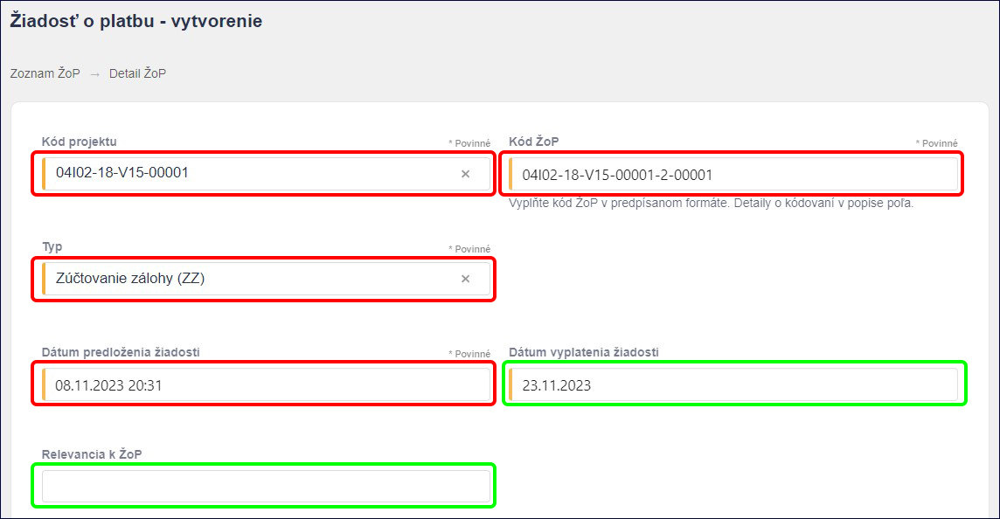
V poliach pre vykázané a vyplatené výdavky vyplníme relevantné sumy ako Sumu z plánu obnovy bez DPH, Čiastku DPH z Plánu obnovy, *Verejné zdroje mimo EÚ, Verejné zdroje EÚ a Vlastné zdroje. Kliknutím na tlačidlo Prepočítať sa automaticky prepočíta suma Celkom. Uviesť môžeme tiež Neoprávnené výdavky*.
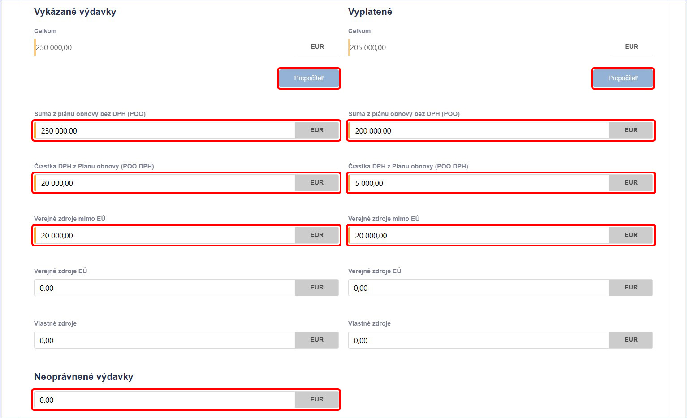
V časti prijímateľ klikneme na tlačidlo Pridať. Systém nám automaticky navrhne subjekt, ktorý už bol pridaný v projekte.
Ak nám navrhnutý subjekt nevyhovuje alebo vytvárame evidenčný projekt, po kliknutí na tlačidlo pridať osobu/organizáciu a do poľa Výber osoby / Výber organizácie uvedieme meno a priezvisko/názov alebo IČO organizácie. Systém ISPO spárovaný s RFO/ RPO navrhne zoznam osôb/organizácií, z ktorých si vyberieme požadovanú a potvrdíme tlačidlom Pridať.
Takto pridaný prijímateľ sa zobrazí v základnom tvare, systém však na pozadí dotiahne všetky údaje o prijímateľovi. Rovnakým spôsobom môžeme pridať Dodávateľa a následne aj Subdodávateľov.
V časti Poznámka môžeme uviesť doplňujúce údaje k ŽoP. Následne klikneme na tlačidlo Pridať, čím potvrdíme vytvorenie ŽoP.
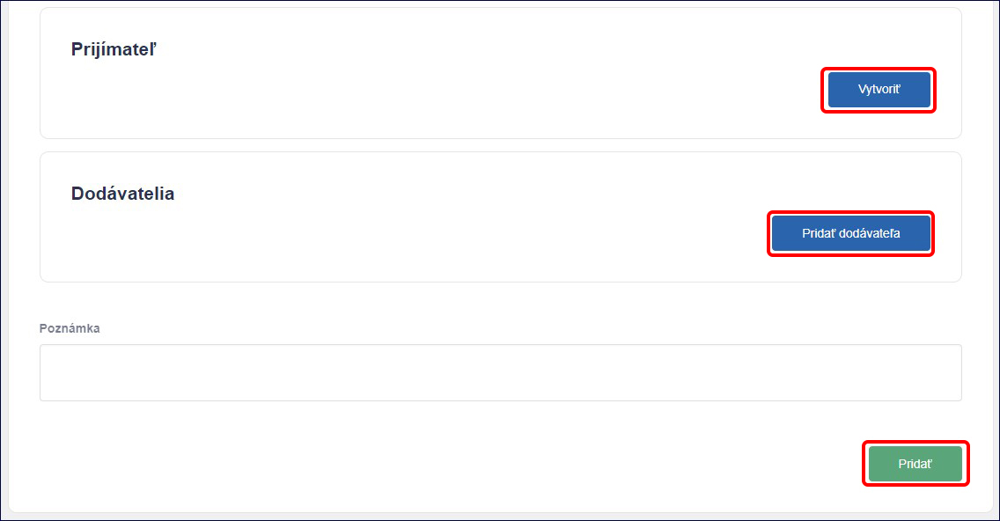
Takto založená ŽoP sa dostane do zoznamu Vkladanie údajov - ŽoP a kedykoľvek sa ku nej môžeme vrátiť a upraviť.